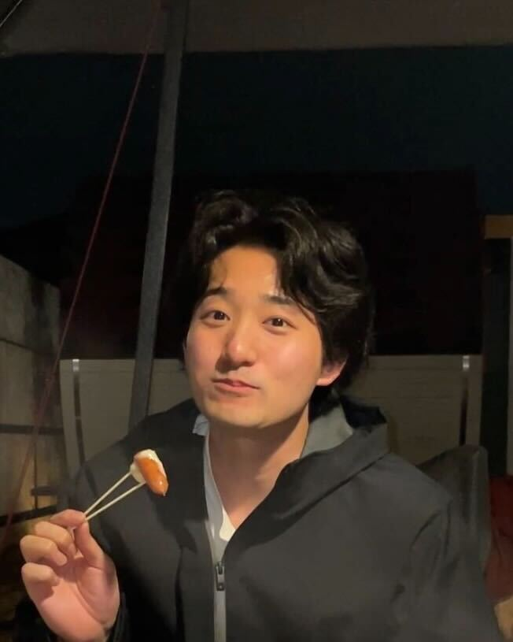

Profile
I am a second-year master's student researching group activity understanding.
Interests: CV, Sports, Foundation Models.
Hobbies: Work out, Sauna.
- Affiliation: Intelligent Information Media Lab.
- Status: M2
- Keywords: Group Activity Understanding
